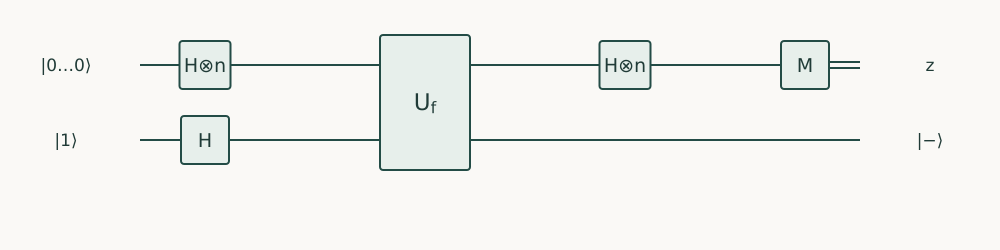

Quantum Algorithms · Chapter 3 · Draft lesson
Phase Encoding
How can a function change relative phases without leaving a record of its input?
Chapter direction
Starting point: Chapter 2 and the phase-kickback construction in Quantum Computing.
Anchor example: A Boolean predicate encoded as a sign and read through a Hadamard.
This lesson includes explanations, worked examples, and problems with solutions. Advanced results whose proofs are outside the chapter are identified explicitly.
3.1 Controlled Phases
An oracle hides a string of bits. Reading the string one bit at a time seems unavoidable, until we ask whether an entire pattern of relative signs can reveal it in one measurement. The challenge is to encode a relationship without retaining the intermediate values that would prevent interference.
3.1.1 Eigenstate targets
Let \(V\ket u=e^{i\phi}\ket u\). The name eigenstate means precisely that the operation changes this state only by a phase. Controlled-\(V\) sends \((\ket0+\ket1)\ket u/\sqrt2\) to \((\ket0+e^{i\phi}\ket1)\ket u/\sqrt2\). The target factors out: the phase is now relative between the control branches. This needs a reproducible eigenstate and controlled access, not merely an unknown box labeled \(V\).
A Hadamard on the control gives probability \((1+\cos\phi)/2\) for zero. Thus one interference experiment reads a trigonometric property of a phase. Repeating it estimates that probability, not every digit of \(\phi\) for free.
3.1.2 Bit oracles and phase oracles
For a Boolean oracle \(U_f\ket{x,y}=\ket{x,y\oplus f(x)}\), the target \(\ket-\) is an eigenstate of X with eigenvalue −1. A single query therefore implements \(O_f\ket x=(-1)^{f(x)}\ket x\). If evaluation leaves garbage, use the cleanup from Chapter 2. Conversely, a phase oracle alone cannot distinguish \(f\) from \(f\oplus1\), because their operations differ by a global sign. It does not automatically supply a bit oracle.
Problem 3.1. For \(s=11\), predict the four signs before the last Hadamards.
Worked solution
They are +, −, −, + in basis order 00,01,10,11. Each output amplitude factors into two one-bit sums, so only output 11 survives.
3.2 Interference Readout
3.2.1 Bernstein–Vazirani
Suppose \(f_s(x)=s\cdot x\pmod2\), where \(s\) is an unknown \(n\)-bit string and the dot means XOR of the products of corresponding bits. Prepare all inputs uniformly, query into \(\ket-\), and apply a Hadamard to every input qubit. The amplitude of output \(z\) is
\[2^{-n}\sum_{x\in\{0,1\}^n}(-1)^{(s\oplus z)\cdot x}=\prod_{j=1}^n\frac{1+(-1)^{s_j\oplus z_j}}2.\]
Every factor is one if its two bits agree and zero otherwise. Hence the output is \(s\) exactly. For \(s=10\), the signs on inputs 00,01,10,11 are +,+,−,−; the final two Hadamards concentrate all amplitude at 10. This is Bernstein–Vazirani. One query does not mean one gate: preparation and readout require order \(n\) gates and \(n\) output bits. A classical exact query provides one linear equation in \(s\), so fewer than \(n\) such equations cannot identify all \(2^n\) strings.
3.2.2 Deutsch–Jozsa and promise assumptions
For a general Boolean \(f\), the same circuit has amplitude \(2^{-n}\sum_x(-1)^{f(x)}\) at zero. Under the promise that \(f\) is constant or balanced, this amplitude has magnitude one or zero. The test is exact in one coherent query. Without the promise, nonzero outcomes do not classify all functions into those two categories.
The classical comparison depends on its error allowance. Exact worst-case classification can require \(2^{n-1}+1\) queries. With independent uniformly chosen queries, a balanced function produces identical sampled values with probability \(2^{1-k}\) after \(k\) samples, while a constant function always does. The exponential exact separation is therefore not an exponential bounded-error separation.
Problem 3.2. A Boolean function is one on three of eight inputs. What is the probability of zero after phase encoding and Hadamards?
Worked solution
The zero amplitude is \((5-3)/8=1/4\), so the probability is \(1/16\). Calling every nonconstant function “balanced” would give an incorrect prediction.

3.3 Phase Arithmetic
3.3.1 Encoding numerical values
Numerical values can be encoded using modular addition. On an \(m\)-bit register with \(M=2^m\), prepare \(\ket{\chi}=M^{-1/2}\sum_{y=0}^{M-1}e^{-2\pi i y/M}\ket y\). Adding an integer \(v\) modulo \(M\) multiplies this state by \(e^{2\pi i v/M}\): set \(z=y+v\) in the sum to verify the sign. Controlled addition of \(v(x)\) then transfers that phase to the input branch. The cost includes preparing the phase register and computing the addition.
3.3.2 Workspace restoration and phase precision
If a desired real phase \(\phi(x)\) is replaced by \(\widetilde\phi(x)\) with pointwise error at most \(\delta\), then \(|e^{i\phi}-e^{i\widetilde\phi}|\leq\delta\). On a normalized input, the state-vector error is consequently at most \(\delta\). Rounding a phase to the nearest multiple of \(2\pi/M\) gives \(\delta\leq\pi/M\). Compute the numerical value, apply the phase, and uncompute it; otherwise precision is not your only problem—retained workspace also changes the readout.
Problem 3.3. Why does changing every function value by one leave the phase-oracle experiment unchanged?
Worked solution
It negates every amplitude by the same factor. All output probabilities stay unchanged. A controlled version with a fixed phase convention is an extra resource, so it cannot silently be assumed to solve this ambiguity.
Phase encoding gives us a pattern of complex amplitudes. Fourier methods next turn structured phase patterns into measurable frequencies.
Sources and further study: Cleve et al., Quantum Algorithms Revisited.